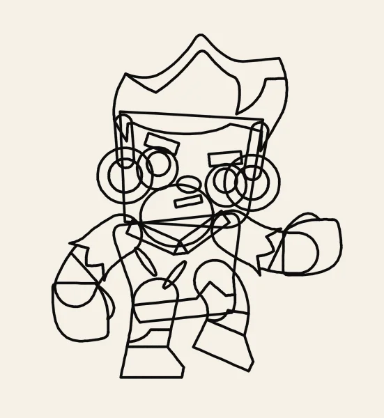
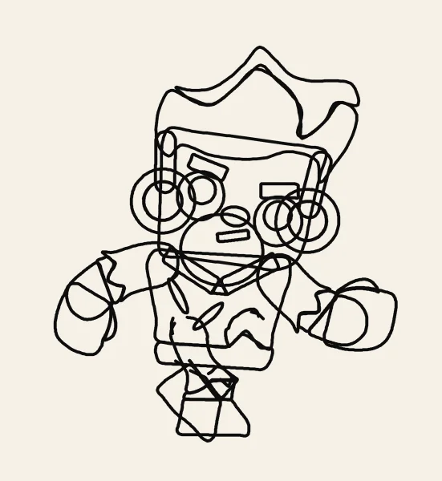
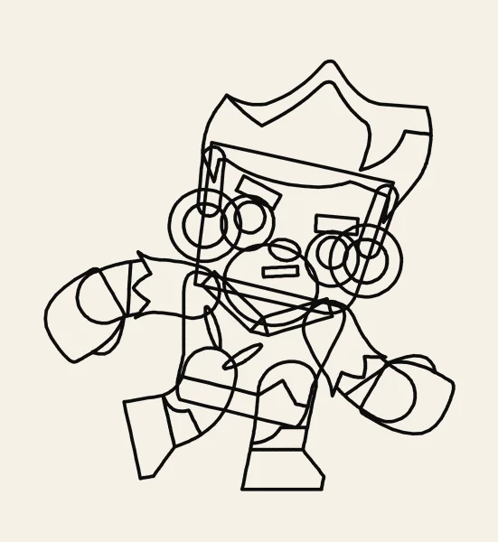

Rithwick Sethi
Co-founder · CEO
MS AI Engineering, Carnegie Mellon. Built tooling at Apple. 7 research papers.
AI in-betweening for 2D animation
Rabbit AI turns your key drawings and timing chart into clean, editable vector in-betweens. Your animators review, keep what works and retake the rest.



The middle drawing is generated by our model from the artist's two keys, as editable vector lines. Drawings: Blender Studio, CC BY 4.0.
Vector line art (SVG or Grease Pencil) plus your exposure sheet. Holds and timing stay yours.
Our model matches lines between keys, moves them along the motion and hides lines that pass behind others.
Scrub with onion skin, accept drawing by drawing, undo anything. Locked drawings are never touched.
Loose hand-drawn pencil is harder, and that's where we're improving fastest. Your art stays private and is never used for training without your permission.
Co-founder · CEO
MS AI Engineering, Carnegie Mellon. Built tooling at Apple. 7 research papers.

Co-founder · CTO
MS ECE, Carnegie Mellon. AI workloads at Arm, data pipelines at Wells Fargo.
Send two keys and a timing chart. We'll send back editable in-betweens.